Diseño de una web para ventas de entradas de cine

Rol y responsabilidades
Este proyecto fue elegido del curso "Diseño de experiencias del usuario UX" de Google en coursera. En estre proyecto trabaje como investigador principal UX y desarrollador. Fui jefe de interfaz de usuario, centrandome en el diseño visual creando prototipos de baja y alta fidelidad y la interaccion.
Publico objetivo: Estuve creando para web para venta de boletos de un cine que les permia a los usuarios comprar sus entradas anticipadas, elegir sus asientos y también que puedan elegir el cine al que van a concurrir.
Desafio: Diseñar una web para que los usuarios puedan comprar sus entradas online y puedan reservar sus asientos.
Objetivo:Nos interesa averiguar dificultades que puedan tener nuestros usuarios a la hora de comprar los boletos en la pagina web, seleccionar los asientos y guiarlos con un flujo intuitivo para que todos puedan comprar sus boletos.
Investigacion
Realicé entrevistas y creé mapas de empatía para entender a los usuarios para quienes diseño, así como sus necesidades. Un grupo de usuarios primario identificado a través de la fanáticos de la cinematografía. Este grupo de usuarios confirmó las suposiciones iniciales que puedan comprar sus entradas con anticipación y puedan reservar sus asientos.
Personas entrevistadas
Para esta investigacion se han realizado 5 entrevistas en las cuales Juan y Aron se destacan.
Juan es arquitecto, el es fanático del cine y muchas veces no tiene entradas porque sale tarde del trabajo y las veces que puede, no consigue asientos para sentarse junto a su pareja
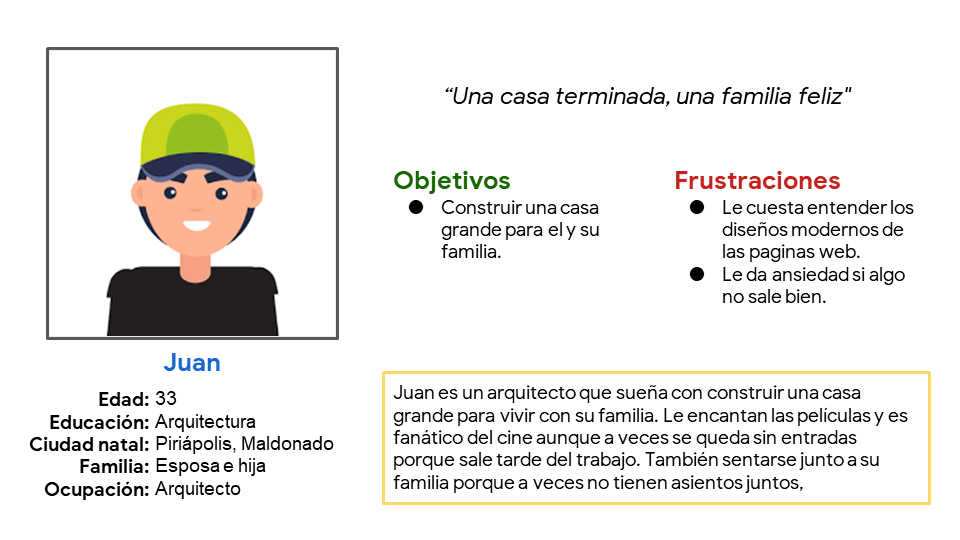Aron es un contador que es agil con los numeros. Acualmente esta realizando el profesorado para ser profesor de matematicas. El no tiene mucho tiempo libre como para planear una salida y por lo general van a un parque a distraerse porque no consiguen entradas para el cine o se tienen que sentar muy separados y no disfrutan la pelicula juntos.
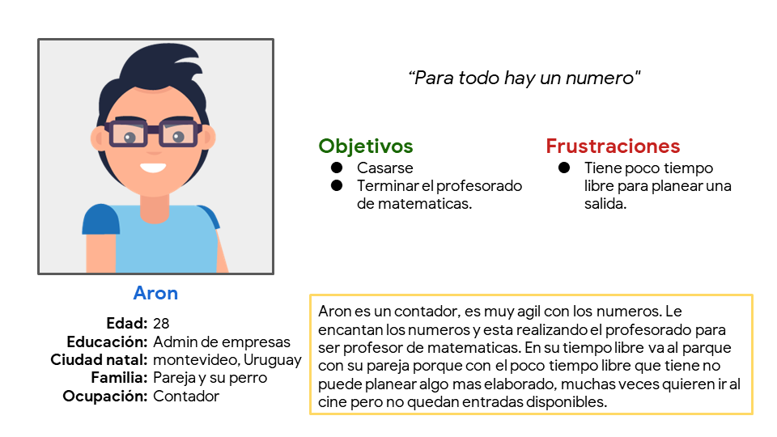Comenzando el diseño
Esquemas de pagina

Se utilizaron estrellas para marcar los elementos de cada boceto que se usarían en los primeros esquemas de página digitales.
Esquemas de paginas digitales (Prototipo de baja fidelidad)
 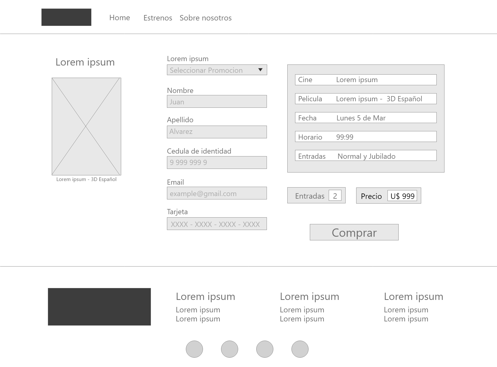
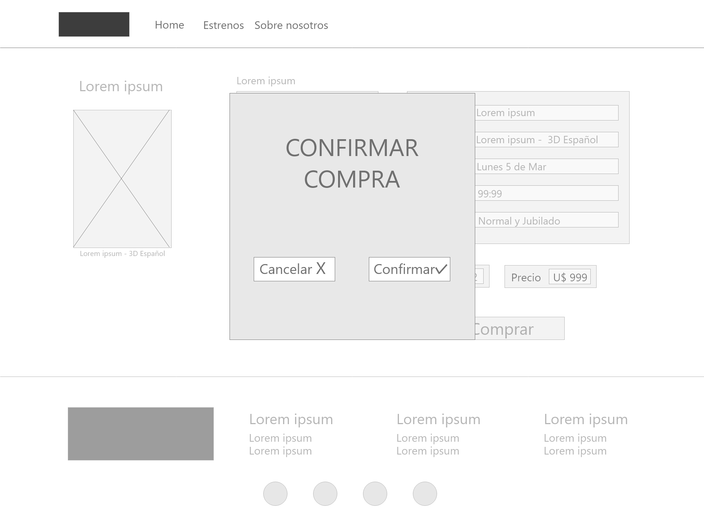
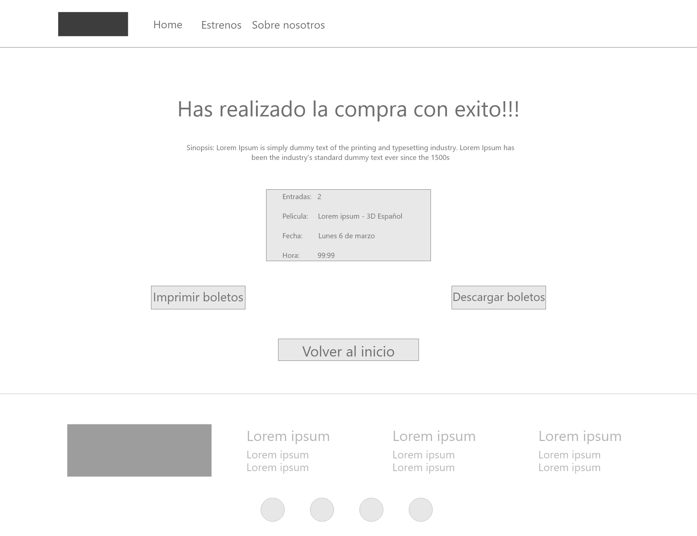
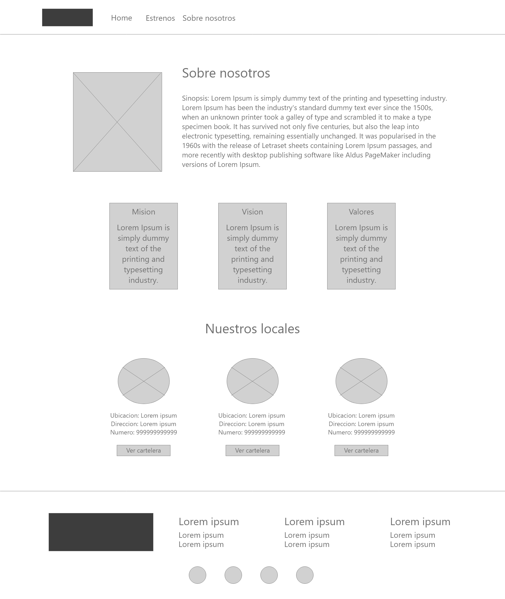
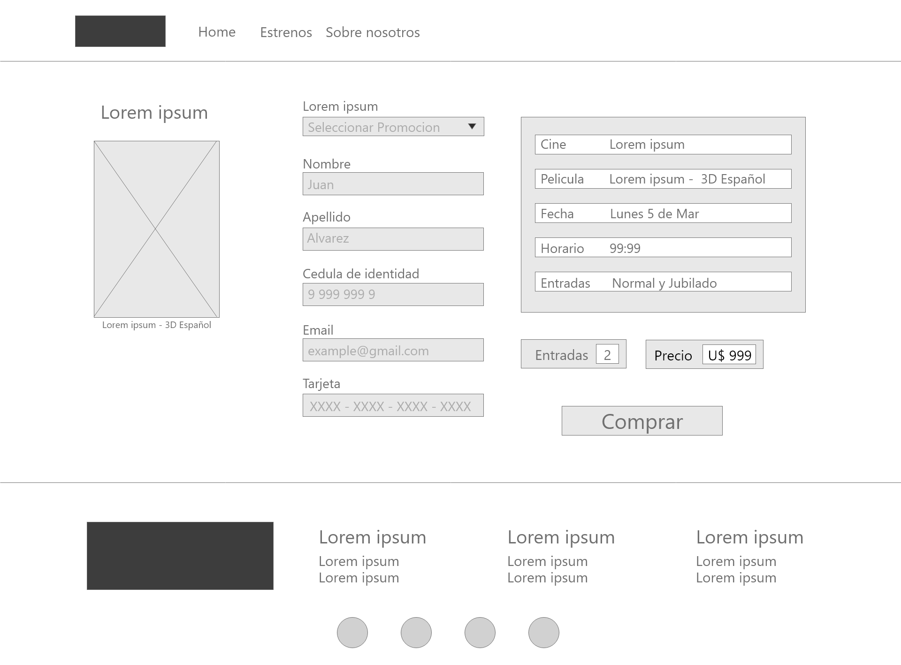
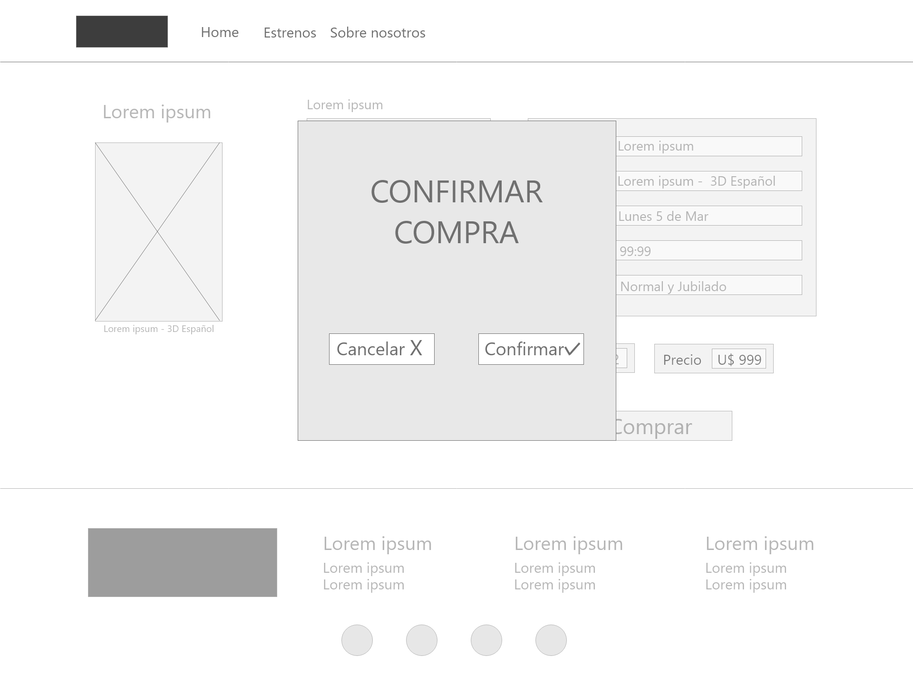
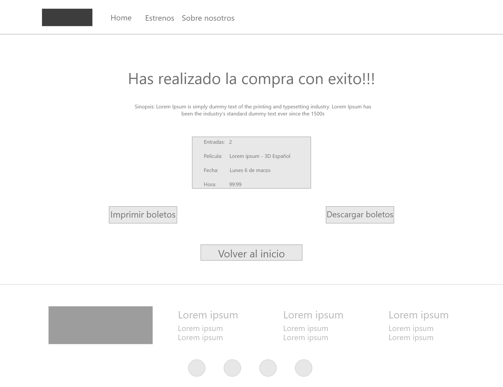
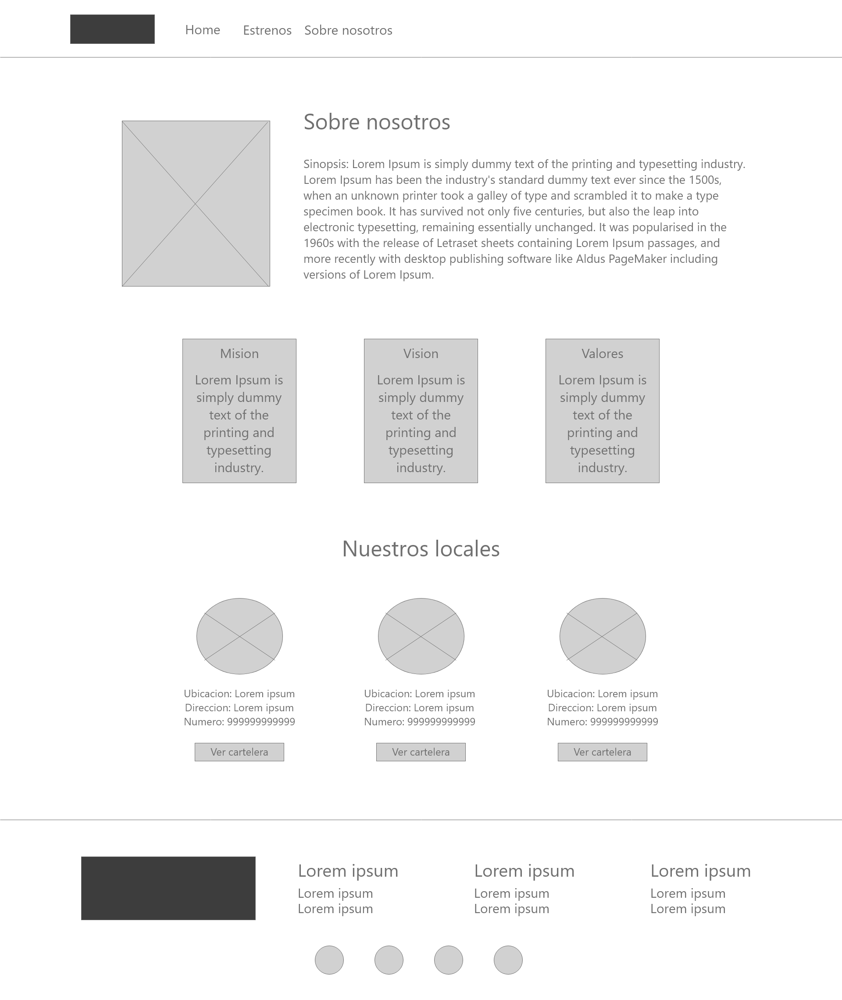

Estudio de facilidad de uso: Hallasgos
- Los usuarios quieren una manera de ver comodamente todas las peliculas en estreno
- Los usuarios quisieran tener una confirmacion de pago por si quieren cancelar la compra.
Perfeccionando el diseño
Maquetas:
Esquemas de paginas digitales (Prototipo de alta fidelidad)

 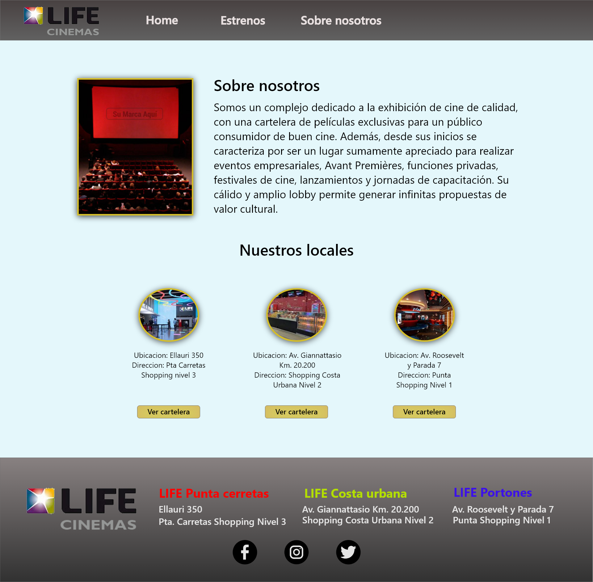
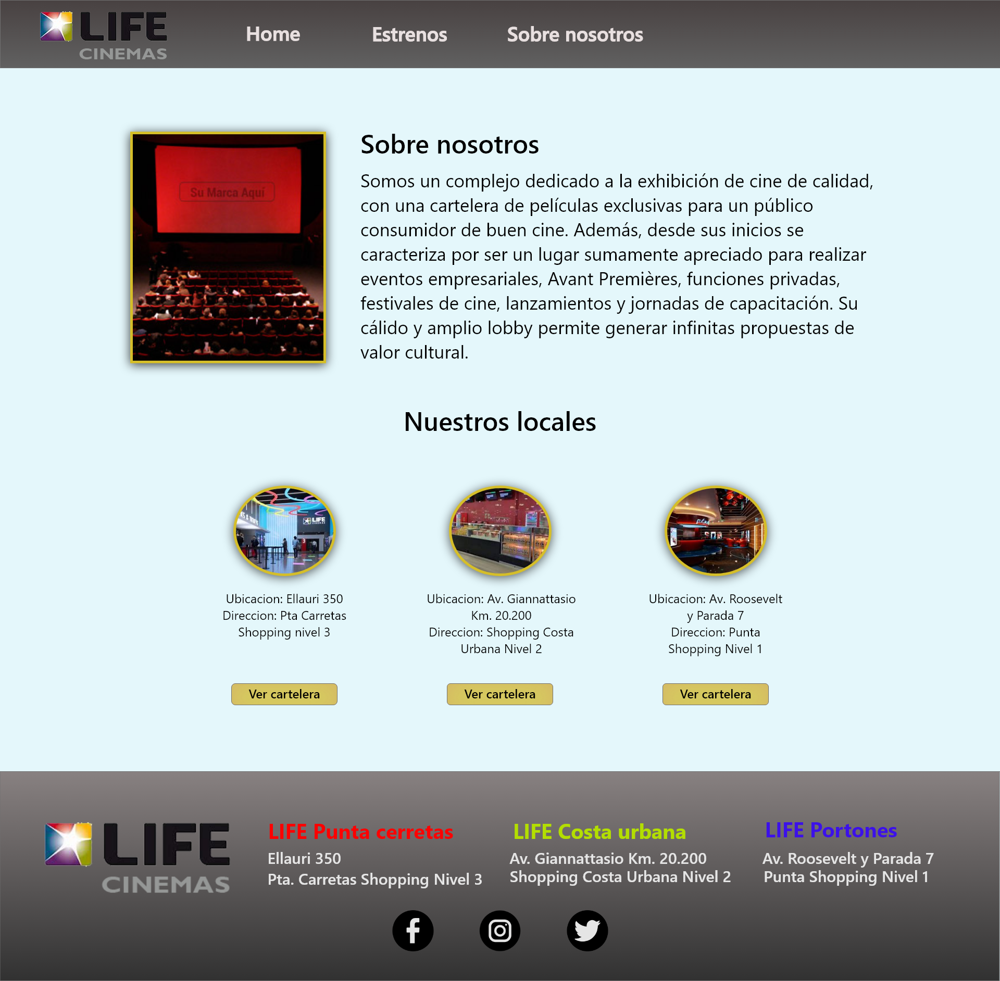

Accesibilidad
1
Se incorporo una fuente serif sans para que sea mas visibles para personas con poca visibilidad.
2
Se usaron íconos para facilitar la navegación.
3
Se usaron imágenes detalladas de las comidas para ayudar a todos los usuarios a comprender mejor los diseños.
Conclusiones
¿Que aprendi?
Aprendi que es importante adaptar el diseño para diferentes tipos de dispositivos y a su vez ajustar el diseño para que siga la misma jerarquia.
Proximos pasos
1
Realizar unos ajustes con respecto a como se toma la información del usuario para realizar la compra de las entradas y la funcionalidad de la reserva de asientos.
2
Realizar otra ronda de estudios de facilidad de uso para validar si las dificultades experimentadas por los usuarios se abordaron de manera efectiva.
3
Realizar más investigaciones de usuarios para identificar nuevas necesidades.